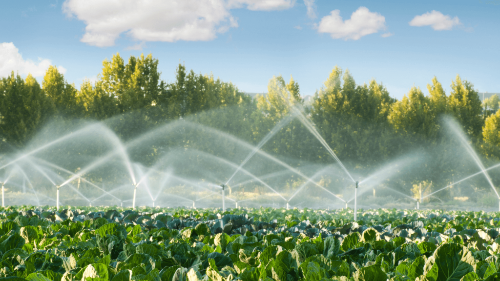
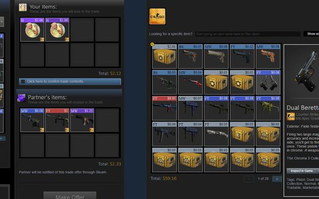
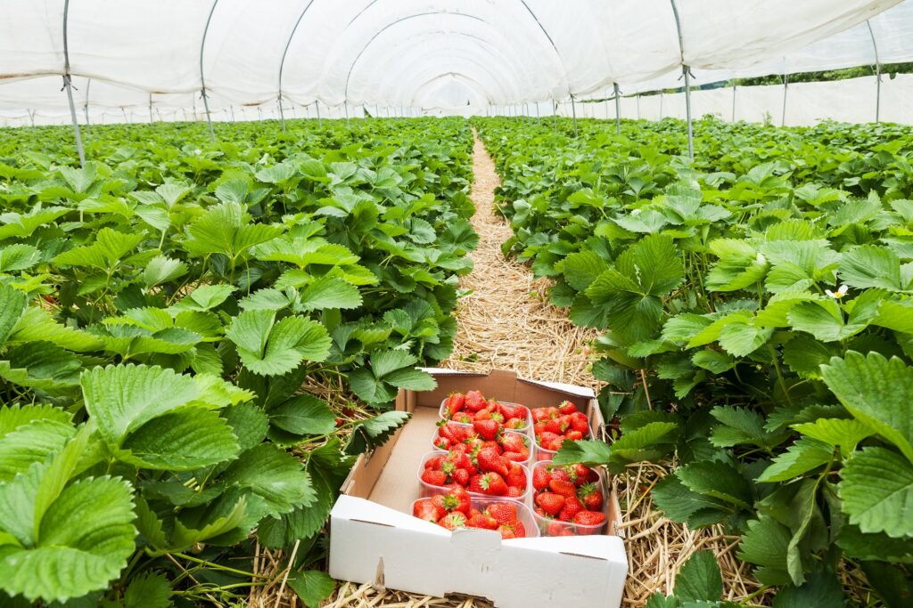
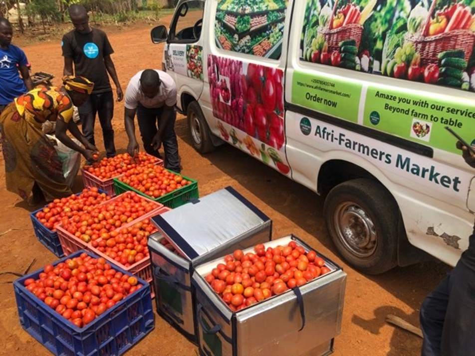

Agriculture Learning Gallery

🌱 Healthy soil is the foundation of good farming. Proper soil management increases water retention, improves nutrient cycling, and reduces erosion. Farmers who take care of their soil enjoy stronger crops, better yields, and sustainable food production for future generations.

🚰 Smart irrigation ensures water is used efficiently by delivering the right amount at the right time. It helps conserve scarce water resources, reduces costs, and keeps crops healthy. Farmers adopting this technology can increase productivity while protecting the environment.

🍅 Early detection of crop diseases saves farmers from losing entire harvests. Using technology such as AI and sensors allows farmers to identify symptoms faster, apply treatment in time, and reduce pesticide use. This makes farming more sustainable and profitable.
1) Smart Irrigation System
Smart irrigation uses soil moisture sensors and IoT devices to deliver just the right amount of water. This technology helps reduce waste, saves money for farmers, and protects freshwater resources. It also ensures crops remain healthy even in areas with unpredictable rainfall patterns.
2) Farm Produce Market Price Tracker
Market price trackers give farmers real-time information about produce prices in different markets. By knowing where prices are higher, farmers can sell strategically and maximize profits. This reduces exploitation by middlemen and empowers farmers to make informed decisions about their harvests.
3) Crop Disease Detection App

This app allows farmers to photograph crop leaves and quickly detect diseases using AI. Early diagnosis means faster treatment, fewer losses, and reduced chemical use. It empowers even small-scale farmers to protect crops effectively, ensuring food security and better earnings.
4) Organic Fertilizer from Waste
Organic fertilizers made from kitchen waste, animal manure, and crop residues improve soil fertility naturally. They reduce dependence on chemical fertilizers, enhance biodiversity, and lower costs for farmers. This practice makes farming more sustainable and produces healthier food for consumers.
5) Farmer–Consumer Direct Market Platform
Direct market platforms connect farmers with consumers, eliminating unnecessary middlemen. This increases farmers’ profits and gives consumers access to fresher, cheaper produce. It also encourages trust and transparency in the food system, building stronger local food networks and supporting rural communities.